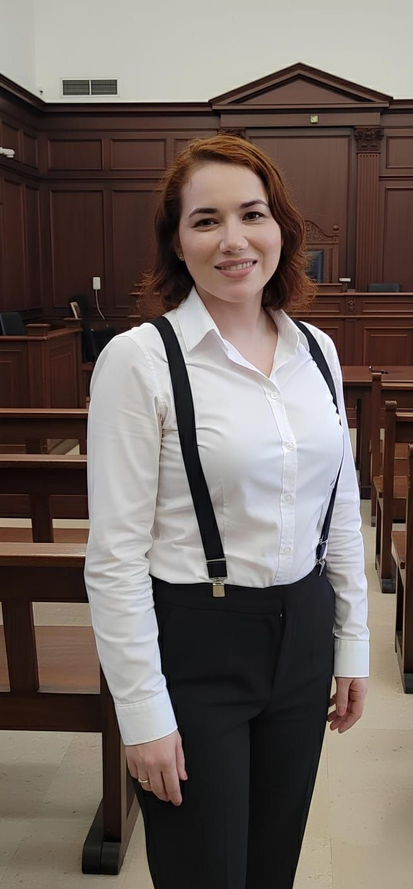

Familiar preso ou intimado? Em prisão em flagrante e audiência de custódia, cada hora conta. Defesa criminal de alta complexidade em Santarém/PA e demais Estados onde mantemos processos ativos, com atuação direta em tribunais superiores e plantão de urgência 24 horas.
Atendimento imediato pelo WhatsApp · plantão 24h · sigilo profissional garantido.
O Gemaque Advogados estrutura a defesa criminal em três pilares: técnica jurídica rigorosa, conhecimento profundo do procedimento penal e presença prática nas fases críticas do processo. Trabalhamos do flagrante em curso até o recurso em STJ e STF, com foco em obter resultados concretos para o cliente em cada fase processual.
A Dra. Elizângela Gemaque (OAB/PA 25.630) é especializada em Direito Criminal de Alta Complexidade e integra a comunidade nacional Mindjus Criminal, rede técnica de criminalistas brasileiros.
Garantia constitucional do art. 5º, LXVIII. Impetração em todas as instâncias, do juiz natural ao STJ e STF. Atuação imediata em prisões ilegais, abuso de autoridade e medidas cautelares ilegais.
Atendimento 24 horas em casos de prisão em flagrante. Defesa técnica imediata para reverter prisão preventiva, requerer medidas cautelares alternativas ou liberdade provisória.
Defesa em crimes dolosos contra a vida. Sustentação oral em plenário, preparação de testemunhas, estratégia probatória e recurso quando necessário.
Progressão de regime, livramento condicional, remição por trabalho e estudo, transferência de unidade prisional e benefícios previstos na Lei de Execução Penal (LEP).
Defesa em todas as fases. Distinção qualificada entre tráfico e uso, contestação da quantidade apreendida, aplicação do tráfico privilegiado (art. 33, §4º) e nulidades probatórias.
Defesa em estupro, estupro de vulnerável, importunação sexual e crimes correlatos. Estratégia probatória, contestação de laudos e perícias, e sustentação oral em julgamentos.
Defesa em homicídio simples, qualificado, culposo e tentado. Acompanhamento desde o inquérito policial até o Tribunal do Júri, com estratégia integral de defesa.
Recurso Especial (STJ), Recurso Extraordinário (STF), Agravo em REsp/RE, Habeas Corpus originário em cortes superiores e revisão criminal.
A audiência de custódia ocorre em até 24 horas após a prisão. O advogado deve ser acionado imediatamente para apresentar tese de relaxamento ou conversão em medidas cautelares alternativas. O escritório atende casos de urgência criminal 24 horas pelo WhatsApp.
Sim. A advocacia particular pode substituir a defesa pública ou advogado anteriormente constituído em qualquer fase processual, inclusive na execução penal. O escritório avalia o caso, lê os autos integralmente e apresenta plano de defesa antes da contratação.
Sim. Atuamos no Pará todo, em demais Estados onde mantemos processos ativos (MA, AP, AM, TO, MT, MS, BA, MG, SC, RS) e nos tribunais superiores (STJ e STF) em Brasília/DF. Atendimento à distância por videochamada e WhatsApp.
Os honorários são definidos caso a caso conforme a complexidade do feito, a fase processual, o número de réus, a comarca de atuação e os recursos eventualmente necessários, nos termos do art. 22 do Estatuto da OAB. Não divulgamos valores em material de marketing por exigência do Provimento 205/2021 da OAB.
Os principais ritos do processo penal. Clique em cada tema para expandir. Conteúdo informativo — CPP · CF/88 · LEP (Lei 7.210/84) · Pacote Anticrime (Lei 13.964/19).
O que acontece nas primeiras 24 horas após uma prisão.
Garantia constitucional contra prisão ou ameaça ilegal à liberdade — Art. 5º, LXVIII, da CF.
Do oferecimento da denúncia à sentença.
Procedimento dos crimes dolosos contra a vida.
Direitos e benefícios na fase de cumprimento da pena — LEP (Lei 7.210/84).
Material de natureza informativa e educacional. Para orientação sobre um caso concreto, fale com a advogada. Referências: Código de Processo Penal · CF/88 · LEP (Lei 7.210/84) · Lei 13.964/19.

Dra. Elizângela Gemaque de Almeida — OAB/PA 25.630. Advocacia de alta complexidade em Direito Criminal, Ambiental e Eleitoral, com atuação em Santarém/PA, demais Estados e nas cortes superiores (STJ, STF, TSE).
Atendimento direto da advogada titular e sigilo profissional integral garantido (art. 7º, II, EOAB).
Atendimento 24 horas em prisão em flagrante e audiência de custódia. Sigilo profissional integral garantido (art. 7º, II, EOAB).
Falar agora sobre meu casoConte brevemente o que você precisa. Ao enviar, você é direcionado ao WhatsApp do escritório para atendimento pela equipe da Dra. Elizângela Gemaque.
Prefere outro canal?
WhatsApp +55 (73) 99998-9925 · E-mail adv.elizangela.gemaque@gmail.com